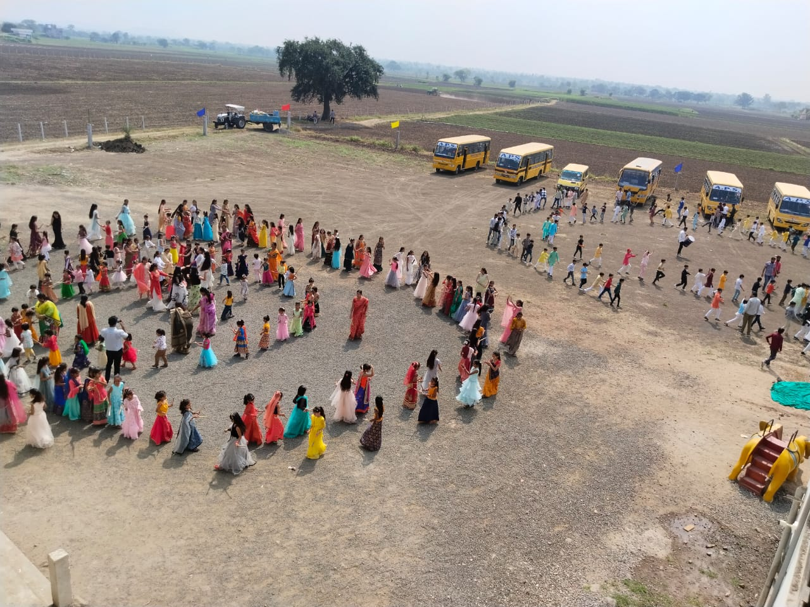
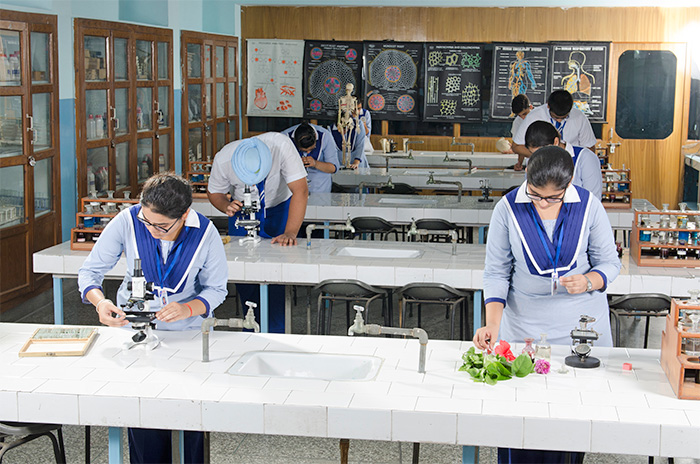

OUR FACILITIES
The school campus offers a learner-friendly environment with a fine blend of functionality and aesthetics.

Library
Well-resourced, aesthetically designed Primary School Library and Senior School Library.

Playground
The school has a well-laid, lush green playground.

Laboratory
The school has spacious, well-equipped Physics, Chemistry, Biology and General Science Laboratories.